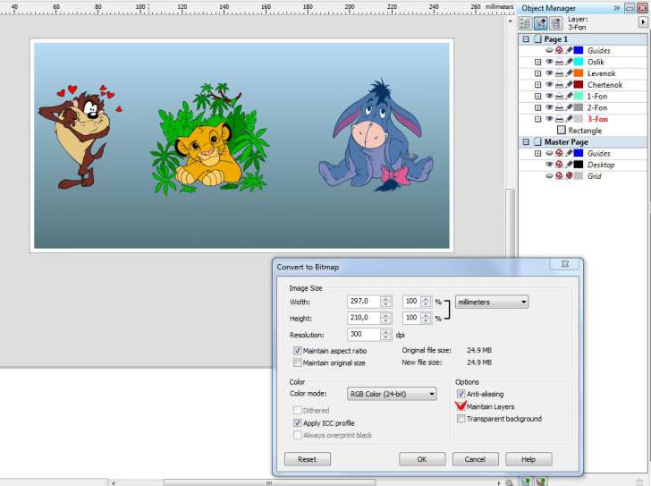
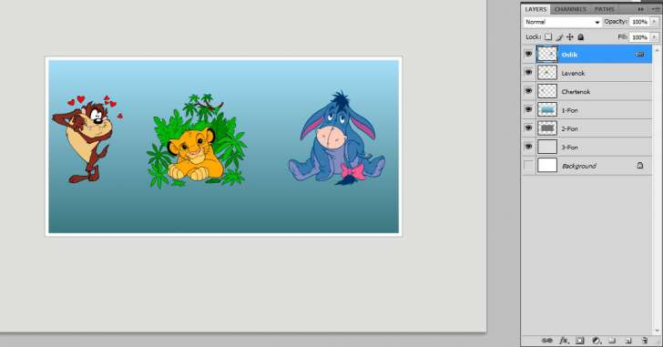

To Layers
Des425 / 19.11.2009, 21:46/00:41
Форум:
ToLayers
Макрос для перемещения объектов - каждый на свой слой. Полезен при экспорте в Photoshop или PhotoPaint с сохранением слоёв. Выделите объекты, которые нужно переместить и запустите макрос.
Источник: corelvba.com
Создайте файл и запустите макрос.
Макрос автоматически расставляет объекты по слоям.

Экспортируйте файл в формат PSD.
Поставьте галочку на против Maintain Layers, жмите OK.
Откройте созданный файл в Photoshope, все объекты остались на своих слоях.

Спасибо блоьшое за макрос, очень долго искала...